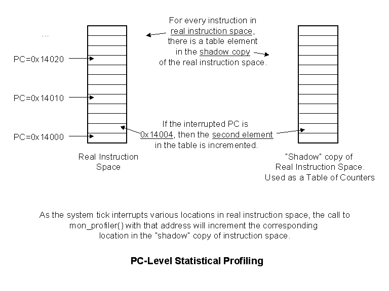

The "prof"
command is used to configure the runtime portion of the profiler and to
dump the statistics gathered by the profiler. The runtime portion
of this is handled through a call to mon_profiler().
This monitor API function is called with a pointer to a monprof structure...
struct monprof {
int type;
int pc;
int tid;
}
Refer to monprof.h
for the latest information. Currently there are three different modes
of operation (bitfields in the 'type' member) supported by this profiler:
MONPROF_FUNCLOG, MONPROF_TIDLOG and MONPROF_PCLOG. Each of them have
their value and depend on the CPU and facilities available in the target
hardware. The application simply includes monprof.h as a header in
the file that contains some high-priority interrupt (preferably the system
tick) that can call mon_profiler(). It must load the 'pc' entry of
the monprof structure with the address that was interrupted by this interrupt
handler, and the 'tid' entry with the task id of the running task.
Note that MONPROF_FUNCLOG
and MONPROF_PCLOG need the 'pc' entry and MONPROF_TIDLOG needs the 'tid'
entry; hence, both the pc and tid entries may not be required information.
 Task
ID Statistics
Task
ID Statistics
Definition: the ability to determine
what tasks are statistically the most active.
The prof command is used to initialize the profiler so that it knows how many different TID values to keep track of. Each time mon_profiler is called the TID value is compared to all tid values already logged (binary search), if a match is found, then that TID count is incremented; if no match is found then the new TID value is inserted into the list. The list is kept sorted so that the TID search is kept efficient.
Following is an example code snippet that would be part of the application's system tick handler or some other high-level interrupt...
struct monprof mp;mp.type = MONPROF_TIDLOG;
mp.tid = getCurrentTaskId(); /* this is application/RTOS specific */
mon_profiler(&mp);
Function
Statistics
Definition: the ability to determine
what functions are statistically the most active.
The prof command is used to initialize
the profiler based on the content of the "symtbl" file. This file
is assumed to have its entries in ascending address order, so the profiler
uses the addresses as symbolic ranges into which each interrupted PC will
fall into. For example, if the content of symtbl was:
main 0x123000then any interrupted PC value between 0x123000 and 0x123803 would be considered a hit to the function main(). This profiling method uses the content of symtbl, so it is wise to remove all but the function addresses from symtbl for this profiling method. Optimizing symtbl provides two benefits: less ram is needed to store this data and less time is taken in the interrupt handler to determine which symbolic range the PC has fallen within. At runtime, each call to mon_profiler() results in a binary search through the list of function symbol addresses looking for a match between the incoming PC and one of the symbol address ranges.
func 0x123804
func1 0x124008
Following is an example code snippet that would be part of the application's system tick handler or some other high-level interrupt...
struct monprof mp;mp.type = MONPROF_FUNCLOG;
mp.pc = getInterruptedPC(); /* this is application/RTOS specific */
mon_profiler(&mp);
PC
Statistics
Definition:
the ability to determine
what lines of code are statistically the most active.
The prof command is used to initialize the profiler based on the size of the application's instruction space (size of .text section). The runtime profiler assumes that all instructions are of fixed size and that an array of space equal to the size of the instruction space is dedicated to this profiling. At the call to mon_profiler() this mechanism simply takes the interrupted PC and computes an offset into the secondary text array based on the PC value and the start of the real .text space. The location of the offset is incremented; hence, this provides the ability to log each instruction that is interrupted in runtime. If the memory space is available and the CPU does have a fixed size for each instruction, then this is a very efficient profiling alternative, the run-time profiler is simply incrementing a location in a table based on the incoming PC and some already computed offset between the actual text space and the "shadow" text space used to log the data. Refer to the diagram...

Following is an example code snippet that would be part of the application's system tick handler or some other high-level interrupt...
struct monprof mp;mp.type = MONPROF_PCLOG;
mp.pc = getInterruptedPC(); /* this is application/RTOS specific */
mon_profiler(&mp);
Example
Profiling Session
Let's assume we have an
application called 'app'. It is an RTOS-based program with three
tasks, and a memory map as is shown by the output of "tfs -v ld app" below.
The function "sysTick()" is the system tick handler (high level periodic
interrupt), the function getInterruptedPC() will return the address of
the instruction that was running just as the interrupt occurred and the
function getCurrentTid() will return the ID of the task that was running
prior to the interrupt occurring.
uMON>tfs -v ld appWe are running on a CPU that has fixed size instructions (4 bytes per) and enough spare memory to allocate a block of RAM equal in size to the .text section of our application (14200 bytes). In the application we insert the following code into the sysTick() function:
.text : copy 14200 bytes from 0xf01b308c to 0x00030000
.data : copy 264 bytes from 0xf01b6804 to 0x00033778
.rodata : copy 208 bytes from 0xf01b690c to 0x00033880
.got : copy 16 bytes from 0xf01b69dc to 0x00033950
.bss : set 204 bytes at 0x00033960 to 0x00
.sbss : set 12 bytes at 0x00033a2c to 0x00
struct monprof mp;Prior to running the application, we must configure the profiler code in the monitor. This is done with the "prof" command...mp.type = MONPROF_PCLOG | MONPROF_TIDLOG;
mp.pc = getInterruptedPC();
mp.tid = getCurrentTid();
mon_profiler(&mp);
There are several steps:
- Initialize (clear) the profiling statistics and control structures
- Configure the profiling mechanisms to be used. In this case we are using the PC and TID logging. For this example we are running an application with 3 task ids and a text section of size 14200 bytes starting at 0x30000...
- Enabling profiling. Without this, the mon_profiler() function would simply return with no logging performed.
- prof init
- prof tidcfg 3
prof pccfg 4 0x30000 14200
prof on
The output of prof show is something like this...prof show
FuncCount Cfg: tbl: 0x00000000, size: 0x0
TidCount Cfg: tbl: 0x00022000, size: 0x3
PcCount Cfg: tbl: 0x00022018, size: 0x3778TID_PROF stats:
00000002 : 1
01114000 : 3
01114800 : 2PC_PROF stats:
00030804 : 1
00031214 : 14 pc out-of-range hits
6 total profiler calls